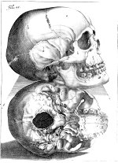

Pieter Paaw, Primitiae anatomicae de humani corporis ossibus. Lugduni Batavorum, ex officina Justi à Colster, 1615. -- (518 F 9)
Na zijn studie in de medicijnen in Leiden en een rondreis langs de universiteiten van Parijs, Rostock (waar hij promoveerde en kort de anatomie doceerde) en Padua, keerde Pieter Paaw (1564-1617) naar Leiden terug en werd er in 1589 benoemd tot buitengewoon hoogleraar.
In december van hetzelfde jaar deed hij daar de eerste sectie op een menselijk lichaam aan de Leidse universiteit. Een vaste plaats voor secties was er nog niet, dat kwam pas toen in de winter van 1594/5 het ‘Theatrum anatomicum’ gereedkwam. Paaw, sinds 1592 hoogleraar in het bijzonder in de anatomie, had dergelijke ontleedplaatsen ongetwijfeld in Italië gezien, zodat het Leidse theatrum naar de modernste eisen kon worden ingericht. Secties vonden in de winter plaats, bij voorkeur bij vriezend weer vanwege de ‘natuurlijke’ koeling.
Paaw, die in 1592 eveneens als opdracht kreeg de ‘academische kruidhof’, de huidige hortus botanicus, in te richten, heeft niet veel gepubliceerd (Kroon geeft negen boeken op), maar zijn Anatomische beginselen over de beenderen van het menselijk lichaam is mede door de zeer duidelijke gravures wel zijn belangrijkste werk.
Literatuur
- J.E. Kroon, Bijdragen tot de geschiedenis van het geneeskundig onderwijs aan de Leidsche universiteit, 1575-1625. Leiden 1911.
- H.J. Witkam, Iets over Pieter Paaw en het Theatrum anatomicum en over het bouwen van de anatomieplaats en de bibliotheek. Leiden 1967.
| vorige pagina | top pagina |